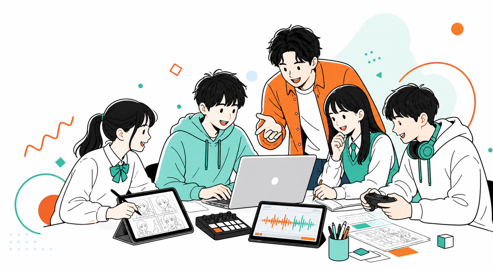
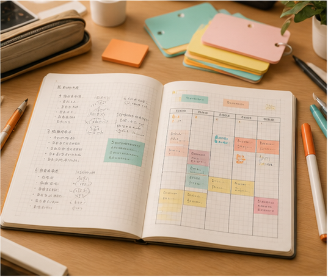
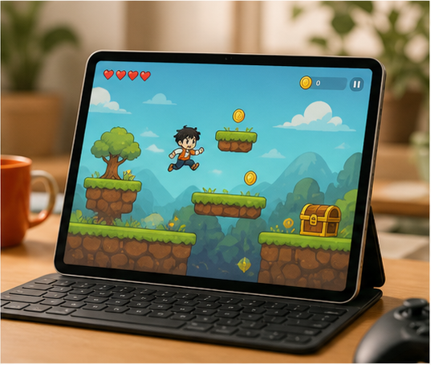
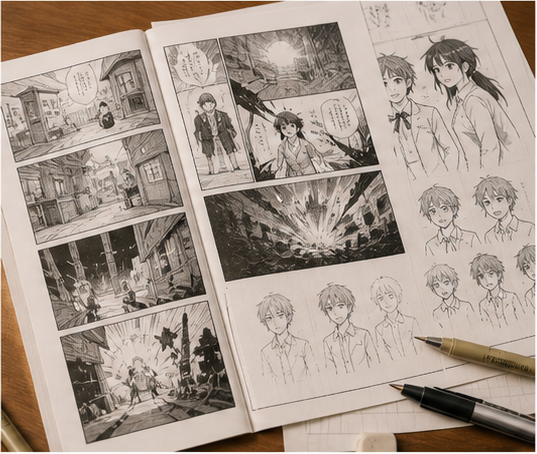
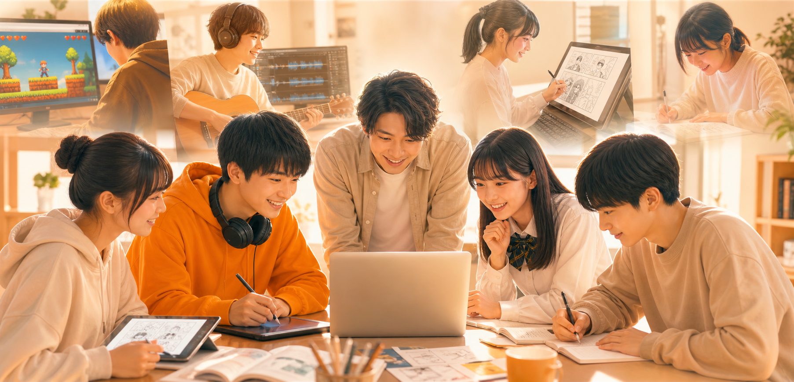
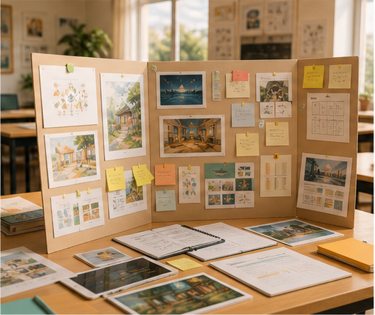
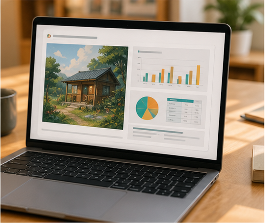

自学の精度が上がる
要約、暗記、復習計画、疑問整理をAIで補助し、自分で学習を進める型を身につけます。
ゲーム、音楽、漫画、学習ノートから始める中高生向けAI活用スクール。 夢中でつくる経験を、勉強の効率化、Techスキル、発表力、ポートフォリオ、AI資格学習へつなげます。
Think & Make. A learning studio for the AI age.

AI Craft Labとは？
ここは、AIツールの使い方だけを覚える場所ではありません。生徒が自然と夢中になり、 作り、調べ、発表する中で、学びが自分ごとになる場所です。
入口は、ゲーム、音楽、漫画、Web制作、学習ノートなど自由でかまいません。大切にするのは、 その体験を勉強、探究、進路準備、資格学習で使える力へ変えることです。
正解を待つのではなく、自分で問いを立て、試し、改善し、選び取る姿勢を育てます。
AI制作は、楽しい体験で終わらせないことで価値が出ます。調べる、まとめる、判断する、説明する。 その一連の流れが、日々の勉強、探究、受験、進路準備で使える実践力になります。
要約、暗記、復習計画、疑問整理をAIで補助し、自分で学習を進める型を身につけます。
作品の目的、工夫、改善点を言語化し、探究発表や推薦入試で伝えられる経験にします。
ゲーム、漫画、Web、学習ノートを作品として残し、進路相談や面接で見せられる材料にします。
生成AIパスポートなどの学習範囲を、実際に作った経験と結びつけて理解します。
著作権、情報の確かめ方、使ってよい場面を親子で共有し、安全に使う土台を作ります。
AIに任せる、確認する、直す、説明するという流れを、早い段階から実践で学びます。
3つの取り組み
生徒の興味を入口に、どのように学びや成果へ変わるのかを具体例で見せます。

Study

Codex

Image


Community
Certificate

Pitch
最初から授業対策だけに絞りません。生徒ごとの興味を入口にしながら、学習効率化、 Techスキル、説明力、成果物、資格学習へ自然につなげます。
保護者向けには、作品づくりだけでなく、説明力、学習習慣、安全なAI活用、進路への活かし方まで整理してご提案します。